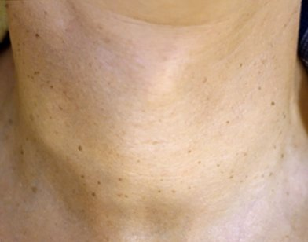
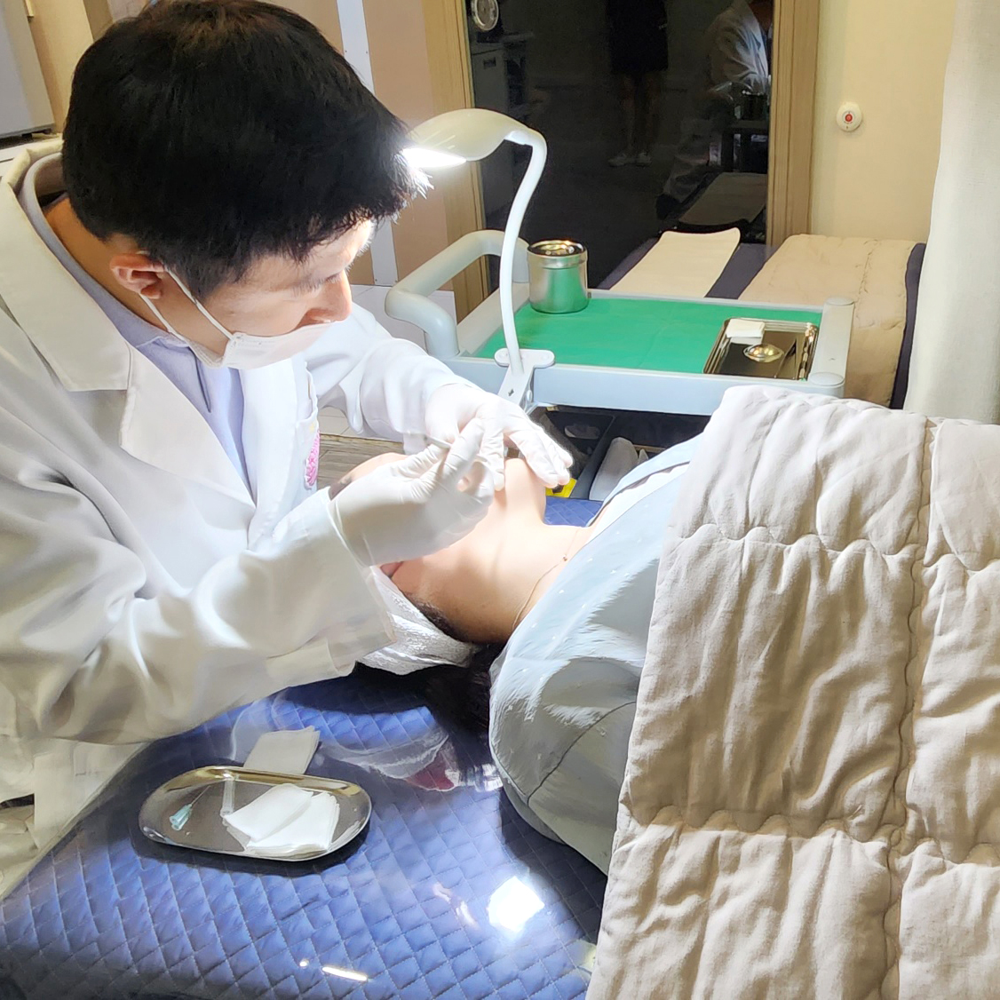
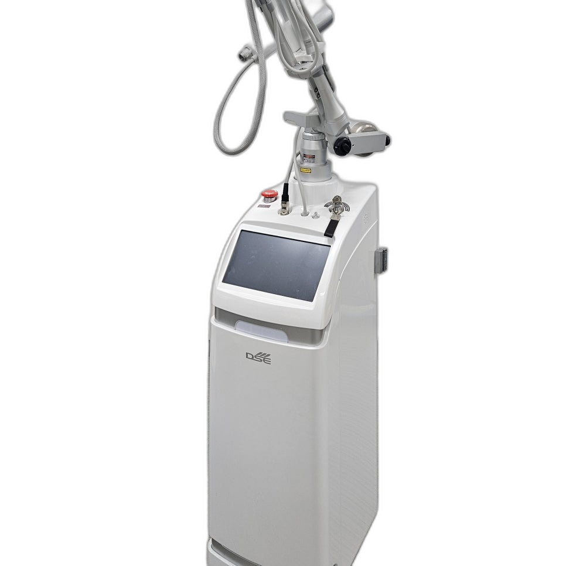

후한의원 네트워크 사례
목 · 18일
목 부위 편평사마귀 — 18일 만에 정리된 사례
23.05.04 → 23.05.22
WHAT IS FLAT WART
편평사마귀는 인유두종바이러스(HPV)가 피부 겉층에 자리 잡으면서 생기는, 높이가 거의 없는 작은 돌기입니다. 하나만 떼어 놓고 보면 잡티처럼 지나치기 쉽지만, 모여 있는 모양과 늘어나는 속도를 보면 성격이 다릅니다. 전주 완산구 후한의원 전주점에서는 허정위 대표원장이 첫 진료에서 돌기 하나하나의 모양과 분포를 직접 살피는 것부터 시작합니다.
주변 피부와 비슷한 색
살색이나 옅은 갈색이라 밝은 조명 아래에서야 비로소 눈에 들어오는 경우가 많습니다.
낮고 평평한 윗면
손끝으로 쓸어야 살짝 걸리는 정도의 높이라 좁쌀여드름이나 잡티로 착각하기 쉽습니다.
손이 자주 닿는 자리
이마·뺨·턱선·목·손등처럼 손과 면도기, 옷깃이 자주 스치는 곳에서 주로 보입니다.
줄지어 늘어나는 성질
긁은 자국이나 면도한 방향을 따라 새 돌기가 이어져 생기기도 해, 개수 변화가 중요한 단서가 됩니다.
WHY REMOVE EARLY
작을 때는 불편이 없어 미루기 쉽지만, 기다리는 동안 조금씩 달라지는 것이 있습니다.
바이러스가 피부에 남아 있는 동안에는 손톱으로 건드린 자리, 면도날이 지나간 자리를 따라 새 병변이 생길 수 있습니다. 몇 개로 시작했다가 짧은 기간에 얼굴 한쪽을 덮을 만큼 늘어난 뒤에야 진료를 받으러 오시는 분도 있습니다.
오래된 병변을 반복해서 뜯거나 문지르면 그 자리에 색이 짙게 남기도 하고, 제거한 뒤 회복 과정에서 색소가 올라올 가능성도 커집니다. 병변이 작고 얕을 때 정리하는 편이 회복 부담이 덜합니다.
저절로 사라지기를 기다리는 사이 이마에서 볼로, 볼에서 목으로 퍼지면 한 번에 정리해야 할 부위가 커지고 회복을 기다리는 시간과 진료 일정도 길어질 수 있습니다.
TREATMENT METHOD
같은 얼굴에 난 편평사마귀라도 크기와 뿌리 깊이는 하나하나 다릅니다. 후한의원 전주점에서는 허정위 대표원장이 병변을 직접 보고 깊이 자리 잡은 것과 겉에 얕게 올라온 것을 먼저 나눈 뒤, 그 판단에 따라 침과 코트라 CO2레이저의 역할을 정합니다. 상담한 원장이 시술까지 이어서 맡기 때문에 진찰 때 세운 기준이 시술 자리까지 그대로 이어집니다.

DEEP LESION

SURFACE LESION
깊은 병변과 얕은 병변을 처음부터 나눠 다루면 넓은 부위를 한꺼번에 깊게 건드리지 않아도 되고,
그만큼 회복 부담을 줄이는 데 도움이 됩니다.
PRICE GUIDE
개수가 많으신 분일수록 무제한 패키지가 훨씬 유리해요.
UNLIMITED · LASER
편평사마귀 + 쥐젖 모두 포함
UNLIMITED · NEEDLE + LASER
편평사마귀 + 쥐젖 모두 포함 · 재발관리까지
레이저 제거와 함께 침 치료를 병행해 면역력을 높이고 재발 가능성을 낮추는 구성입니다.
1개당 제거 비용
※ 위 금액은 이벤트 진행 시점 기준이며 변경될 수 있습니다. 정확한 비용은 상담 시 확인해 주세요.
DIFFERENTIAL DIAGNOSIS
모양이 닮았어도 원인이 다르면 다루는 방법도 달라집니다. 병변에 맞는 이름을 먼저 붙이는 것이 치료의 첫 단계입니다.
목선·겨드랑이처럼 피부가 접히고 쓸리는 곳에 달리는 말랑한 돌기로, 늘어진 피부 결합조직이 원인이라 다른 사람에게 옮지 않습니다. 편평사마귀와 같은 부위에 섞여 있는 경우가 많아, 감별한 뒤 같은 날 함께 정리할 수 있는지 확인합니다.
BEFORE & AFTER

후한의원 네트워크 사례
목 · 18일
목 부위 편평사마귀 — 18일 만에 정리된 사례
23.05.04 → 23.05.22


후한의원 네트워크 사례
이마 · 약 2개월
이마 편평사마귀 — 약 2개월 치료 후 정리된 사례
23.02.13 → 23.04.11


후한의원 네트워크 사례
헤어라인 · 침+레이저
헤어라인 편평사마귀 — 침+레이저 병행 치료 사례
21.03.01 → 21.05.25


후한의원 네트워크 사례
볼 · 20일
볼 부위 편평사마귀·색소 병변 — 20일 만에 개선된 사례
23.07.25 → 23.08.15
‘후한의원 네트워크 사례’ 표시는 후한의원 네트워크 지점에서 진행된 치료 사례입니다.
개인에 따라 시술의 효과는 차이가 있을 수 있으며, 부작용이 발생할 수 있습니다.
의료진과 충분한 상담 후 시술을 진행하셔야 합니다.
DOCTOR

"안녕하세요! 후한의원 전주점 원장 허정위입니다. 점점 차가워져가는 현대사회에서 따뜻한 마음으로 환자분들의 몸과 마음 그리고 외모까지도 정성스럽게 치료하는 의사가 되겠습니다."
FAQ
제거한 자리가 아물 때까지 7~10일 정도는 항생 연고를 바르거나 습윤 밴드를 붙여 상처를 보호합니다. 딱지가 앉으면 손으로 떼지 말고 저절로 떨어질 때까지 기다려야 흉터와 색소침착을 줄이는 데 도움이 됩니다.
먼저 감별 진단으로 병변의 종류를 확인한 뒤, 편평사마귀와 쥐젖·비립종을 같은 날 함께 제거할 수 있습니다. 병변의 종류와 범위에 따라 비용이 추가될 수 있어 상담할 때 미리 안내해 드립니다.
습윤 밴드를 붙였다면 다음 날부터 밴드 위로 가벼운 화장을 할 수 있습니다. 밴드 없이 지낸다면 미세한 상처가 남아 있을 수 있으니 며칠 동안은 그 자리에 자극을 주지 않는 편이 좋습니다. 정확한 시기는 시술 후 상처 상태를 보고 알려 드립니다.
월·화·수·금요일은 10:30부터 20:00까지 진료해 퇴근 뒤에도 방문하실 수 있습니다. 후한의원 전주점은 목요일과 일요일이 휴진이며, 토요일은 10:00~14:00(점심시간 없이) 진료합니다.
CONSULTATION
전화·카카오톡·네이버 예약으로 상담을 신청하실 수 있습니다. 방문하시면 편평사마귀인지 비슷한 다른 병변인지부터 허정위 대표원장이 직접 살펴봅니다.
진료시간
월 · 화 · 수 · 금 10:30 – 20:00
토요일 10:00 – 14:00 (점심시간 없음)
목요일 · 일요일 휴진
점심시간 13:00 – 14:00
HOO KOREAN MEDICAL CLINIC
전주 완산구 후한의원 전주점은 허정위 대표원장이 상담부터 시술까지 직접 맡으며, 월·화·수·금요일에는 저녁 8시까지 진료합니다.
지금 전화 상담하기